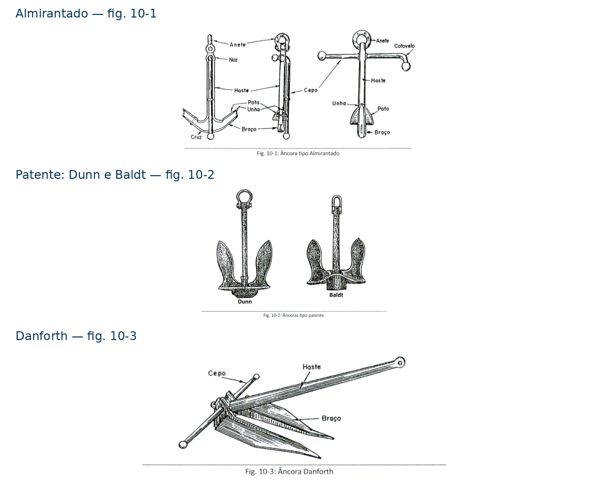

⚓ Fundeio, Suspender e Amarração
Anchoring, Weighing Anchor and Mooring
Estudo dos equipamentos, fundamentos e manobras relacionados ao fundeio, à suspensão do ferro e à amarração do navio, com identificação dos componentes, explicação de seu funcionamento e aplicação operacional conforme as referências.
📊 Progresso da Aula
0% da aula concluída
📘 Identificação da aula
Disciplina: Arte Naval
Assunto: Fundeio, Suspender e Amarração
Termo técnico principal: Anchoring, Weighing Anchor and Mooring
Nível: PSCPP
⏱ Cronômetro de Estudo
📖 Estudo
Estude com concentração durante o ciclo e utilize a pausa para descansar antes de iniciar uma nova sessão.
📋 Conteúdo programático
II — Arte Naval
- Item 3: Manobras de fundear, suspender, amarrar, rocegar, amarrar à boia e largar da boia.
- Item 11: Amarração.
- Item 14: Aparelho de fundear e suspender.
Fonte: Conteúdo Programático — FINAL, página 8 do PDF fornecido.
Tópicos desenvolvidos na Parte 1
- O aparelho de fundear e suspender.
- Nomenclatura das âncoras.
- Âncora tipo Almirantado.
- Âncoras tipo patente.
- Danforth, âncoras especiais e poitas.
- Poder de unhar e ação sobre o fundo.
🎯 Objetivos de aprendizagem
Ao concluir esta parte, o aluno deverá ser capaz de:
- Identificar os componentes principais do aparelho de fundear e suspender.
- Reconhecer a nomenclatura das âncoras e distinguir partes que pertencem a tipos específicos.
- Comparar Almirantado, patente e Danforth quanto à construção e ao funcionamento.
- Distinguir os empregos de ancorotes, fateixas, busca-vidas, gatas, âncoras cogumelo e poitas.
- Explicar a influência do desenho, da natureza do fundo e da direção da tração sobre a presa da âncora.
📚 Publicações utilizadas
Arte Naval — 8ª edição, 2019
Autor: Maurílio M. Fonseca.
Base técnica desta parte: capítulo 10 — Aparelho de Fundear e Suspender, Seção A — Âncoras.
Trechos utilizados: artigos 10.1 a 10.5, páginas impressas 705–713. No PDF fornecido do Volume II, correspondem às páginas 67–75 do arquivo.
- 10.1 — Descrição sumária do aparelho de fundear e suspender.
- 10.2 — Nomenclatura das âncoras.
- 10.3 — Tipos de âncoras.
- 10.4 — Requisitos das âncoras.
- 10.5 — Estudo sobre a ação das âncoras no fundo do mar.
Figuras utilizadas: 10-1, 10-2 e 10-3, páginas impressas 707–709.
Conteúdo Programático — FINAL
Utilizado para delimitar a correspondência da aula com os itens de Arte Naval.
🗂 Organização da aula
O desenvolvimento seguirá esta sequência:
- Fundamentos do fundeio e tipos de âncoras.
- Amarras, acessórios e máquinas de suspender.
- Planejamento e execução do fundeio.
- Permanência no fundeadouro e suspensão do ferro.
- Fundamentos e equipamentos de amarração.
- Manobras de amarração e operações com boias.
- Revisão técnica, exercícios e gabarito comentado.
Cada parte terá seu glossário português–inglês. Os procedimentos e critérios operacionais serão desenvolvidos com indicação dos trechos efetivamente consultados.
PARTE 1 — Fundamentos do fundeio e tipos de âncoras
Anchoring Fundamentals and Anchor Types
O estudo do fundeio começa pela compreensão do conjunto que mantém o navio no fundeadouro: âncora, amarra, máquina de suspender e acessórios.
Nesta parte, estudaremos a nomenclatura, as diferenças construtivas entre os tipos de âncora e os fundamentos de sua ação sobre o fundo.
1. O aparelho de fundear e suspender
Segundo o artigo 10.1 de Arte Naval, o aparelho de fundear e suspender é constituído pelas âncoras, amarras, máquinas de suspender e acessórios, incluindo manilhas, escovéns, gateiras, mordentes e boças.
As âncoras são também chamadas, a bordo, de ferros. Servem para aguentar o navio no fundeadouro, evitando seu arrastamento por forças externas, como vento, correnteza e ondas.
Por efeito de seu peso e desenho, a âncora pode fazer presa no fundo. Ao ser içada pela amarra, deve permitir seu desprendimento.
1.1. Ligação entre a âncora e o navio
Na descrição da publicação, a âncora é ligada por manilha à amarra, constituída por uma cadeia de elos especiais com malhetes.
A amarra sobe ao convés através do escovém. Nas âncoras tipo patente, esse componente também aloja a haste quando o ferro está recolhido.
Do convés, a amarra desce ao paiol por um conduto denominado buzina da amarra. Sua extremidade interior fica presa no paiol.
1.2. Máquina de suspender
A máquina aciona um cabrestante ou molinete. Sua coroa de Barbotin possui cavidades que recebem os elos, permitindo alar a amarra.
As boças e os mordentes têm a função de aguentar a amarra e retirar o esforço do freio da máquina, conforme a disposição do aparelho descrita no artigo 10.1.
Conceito fundamental
O fundeio depende do funcionamento de um conjunto. A âncora faz presa no fundo; a amarra liga o ferro ao navio; a máquina permite sua movimentação; e os dispositivos de retenção agu entam a amarra.
⚠ Atenção PSCPP
Não confunda as funções: o escovém conduz a amarra e pode alojar a haste; a coroa de Barbotin recebe os elos; boças e mordentes aguentam a amarra. Esses componentes serão detalhados na próxima parte.
Referência: Arte Naval, artigo 10.1, páginas 705–706.
2. Nomenclatura das âncoras
O artigo 10.2 apresenta a nomenclatura a partir de uma âncora tipo Almirantado. Algumas partes pertencem a tipos específicos e não devem ser atribuídas indistintamente a todas as âncoras.
- Haste: barra principal da âncora. Sua extremidade inferior se une aos braços; na superior encontra-se a ligação com o anete.
- Braços: ramos que partem da extremidade inferior da haste. No Almirantado, são curvos.
- Cruz: região de união da haste com os braços.
- Patas: superfícies aproximadamente triangulares situadas nas extremidades dos braços.
- Unhas: vértices exteriores das patas.
- Orelhas: os outros dois vértices de cada pata, distintos da unha.
- Anete: arganéu ou manilha na extremidade superior da haste, onde se liga a amarra.
- Cavirão: pino que prende o anete pelo furo da extremidade superior da haste.
- Cepo: barra transversal cuja disposição depende do tipo de âncora. No Almirantado, fica na parte superior da haste, perpendicularmente aos braços.
- Noz: engrossamento da haste no local de passagem do cepo, na descrição do Almirantado.
- Palma: aresta saliente na base inferior dos braços das âncoras tipo patente.

Pata e unha são diferentes
A pata é uma superfície; a unha é seu vértice exterior. Essa distinção permite descrever corretamente a penetração da âncora.
⚠ Atenção PSCPP
Cepo e palma não são sinônimos. O cepo é uma barra transversal; a palma é a saliência da base dos braços descrita para as âncoras tipo patente.
Referência: Arte Naval, artigo 10.2, páginas 706–707.
3. Âncora tipo Almirantado
A âncora tipo Almirantado possui cepo perpendicular ao plano dos braços, braços curvos e patas que fazem presa no fundo.
Arte Naval explica que esse tipo foi substituído como âncora padrão dos navios pelas âncoras tipo patente, principalmente pelas dificuldades de manobra e arrumação a bordo.
3.1. Função do cepo
Quando a âncora cai com os braços aproximadamente horizontais e o cepo apoiado sobre uma extremidade, fica numa posição instável.
A tração da amarra tende a fazê-la deitar sobre o cepo, colocando uma das unhas em posição de penetrar no fundo.
As esferas nas extremidades do cepo dificultam que ele se enterre antes de a unha fazer presa. O cepo participa, portanto, do posicionamento da âncora para unhar.
3.2. Ação da pata
Depois de unhada, a curvatura do braço favorece o aprofundamento da pata quando a amarra exerce esforço horizontal ou pouco inclinado em relação ao fundo.
Na suspensão, o esforço dirigido verticalmente tende a trazer a unha para cima, facilitando o desprendimento.
Relação entre forma e funcionamento
O cepo ajuda a posicionar a unha; o braço curvo e a pata participam da penetração e da retenção. A geometria também favorece a liberação quando muda a direção do esforço.
⚠ Atenção PSCPP
A existência de duas patas não significa que ambas trabalhem simultaneamente na condição usual descrita para o Almirantado. O mecanismo apresentado pela publicação coloca uma pata em posição de fazer presa.
Referências: Arte Naval, artigo 10.3, alínea a, páginas 707–708; e artigo 10.5, alínea a, páginas 711–712.
4. Âncoras tipo patente
As âncoras tipo patente apresentadas em Arte Naval não possuem cepo e têm a haste articulada aos braços. Entre os modelos citados estão Martin, Smith, Hall, Dunn e Baldt.
O artigo 10.3 descreve movimento dos braços entre 30° e 45° para cada lado da haste, conforme a construção. Esses são os valores apresentados pela publicação para essa família.
4.1. Palma e movimento dos braços
A base inferior dos braços possui uma saliência denominada palma. Quando ela encontra apoio no fundo e a amarra exerce esforço aproximadamente horizontal, a geometria favorece a orientação dos braços para baixo e a penetração das unhas.
As duas patas estão dispostas de modo que, quando uma unha, a outra também fica unhada, conforme a descrição do autor.
4.2. Articulação e arrumação
A ausência de cepo e a articulação permitem recolher a haste no escovém, facilitando a manobra e a arrumação a bordo. Essa é a grande vantagem destacada pela publicação.
O artigo também ressalta a necessidade de uma articulação bem ajustada, para evitar a entrada de pequenos corpos estranhos que possam impedir o movimento.
Comparação conforme a fonte
Arte Naval atribui às âncoras tipo patente descritas menor poder de unhar que ao Almirantado, compensado, em determinadas condições de fundo, por maior filame.
Essa comparação deve ser entendida no contexto dos tipos tratados pelo autor, sem generalização automática para todo projeto moderno de âncora sem cepo.
⚠ Atenção PSCPP
Patente não é um único modelo. É a categoria utilizada pela publicação para vários desenhos de âncoras.
Também não significa simplesmente qualquer âncora com braços articulados: a Danforth é tratada separadamente e possui cepo.
Referências: Arte Naval, artigo 10.3, alínea b, páginas 708–709; e artigo 10.5, alínea b, páginas 712–713.
5. Danforth, âncoras especiais e poitas
5.1. Âncora Danforth
A Danforth possui braços semelhantes aos das âncoras tipo patente, porém mais compridos e afilados. Seu cepo fica na cruz, paralelo ao plano dos braços.
Essa posição do cepo é uma diferença fundamental em relação ao Almirantado. Segundo a publicação, ela permite a entrada da âncora no escovém.
Arte Naval destaca seu poder de unhar e seu emprego na popa de embarcações de desembarque que devem aterrar nas praias. Aponta também maior dificuldade para arrancá-la do fundo.
⚠ Comparação quantitativa na bibliografia
O artigo 10.3, alínea c, admite para a Danforth poder de unhar igual a dez vezes o das âncoras tipo patente e a três vezes o do Almirantado de mesmo peso.
Esses números são uma afirmação da fonte, que não apresenta nesse trecho as condições de ensaio. Não devem ser utilizados como multiplicadores universais para dimensionar um fundeio real.
5.2. Ancorote
É uma âncora pequena, do tipo Almirantado ou patente, utilizada em embarcações miúdas ou como ferro auxiliar nas amarrações. A denominação está relacionada ao porte e ao emprego.
5.3. Fateixa
É um ancorote sem cepo, com haste cilíndrica e quatro braços curvos dotados de patas e unhas. A publicação indica seu uso no fundeio de embarcações miúdas.
5.4. Busca-vida
Assemelha-se a uma fateixa, mas possui quatro ou cinco braços sem patas, terminados em pontas agudas.
Sua função indicada é rocegar objetos perdidos no fundo, como amarras e âncoras.
5.5. Gata
É semelhante ao Almirantado, porém com um só braço e cepo pequeno. A publicação a destina a amarrações fixas.
5.6. Cogumelo
Possui formato de cogumelo e também é utilizado em amarrações fixas.
5.7. Poita
A publicação descreve poitas confeccionadas em ferro fundido ou concreto armado, com um forte arganéu para ligação. São utilizadas em amarrações fixas.
Diferenciar pelo emprego
- Fateixa: fundeio de embarcações miúdas.
- Busca-vida: recuperação de objetos por rocega.
- Gata, cogumelo e poita: amarrações fixas.
Referência: Arte Naval, artigo 10.3, alíneas c e d, páginas 709–711.
6. Poder de unhar e ação sobre o fundo
6.1. Requisitos de uma boa âncora
O artigo 10.4 apresenta quatro requisitos:
- Unhar rapidamente e aguentar firme quando o navio rabeia sobre a amarra.
- Soltar-se com facilidade quando a amarra é içada.
- Apresentar dificuldade para entocar ou encepar.
- Permitir facilidade de manobra e arrumação a bordo.
Entocar significa enrascar a amarra nos braços ou nas patas. Encepar significa enrascar a amarra no cepo. O autor explica que essas condições prejudicam a segurança da presa.
6.2. Influência da natureza do fundo
O poder de unhar depende do peso e do desenho da âncora, especialmente das patas. A publicação associa hastes longas e patas agudas a melhor comportamento em areia, enquanto indica preferência por patas largas em lama.
O aumento da área das patas pode melhorar a presa, mas não pode ser considerado isoladamente: o autor ressalta o compromisso com a capacidade de unhar rapidamente.
Peso não explica sozinho a retenção
O funcionamento envolve peso, geometria, natureza do fundo e direção da tração. Duas âncoras de mesmo peso podem ter comportamentos distintos.
6.3. Direção da tração e filame
O artigo 10.5 explica que o esforço horizontal ou pouco inclinado favorece a ação da âncora no fundo. Para obter essa condição, é necessário largar amarra em comprimento superior à profundidade do local.
Esse comprimento largado é denominado filame. As relações de filame e os critérios de sua escolha serão estudados na parte dedicada às amarras e ao fundeio.
Ao suspender, a mudança da direção do esforço para uma orientação mais vertical favorece o desprendimento do ferro, conforme a geometria descrita pelo autor.
6.4. Interação entre âncora e amarra
A publicação destaca o papel do peso da amarra depois de a âncora fazer presa. Isso reforça a necessidade de estudar o conjunto, em vez de atribuir toda a retenção exclusivamente ao peso do ferro.
Para interpretar fisicamente o sistema, a amarra transmite a tração, enquanto a âncora e o fundo oferecem a resistência necessária. O peso e a configuração da amarra influenciam a direção do esforço aplicado à âncora.
⚠ Aplicação operacional
A âncora ter alcançado o fundo não significa que já tenha unhado. Também não se pode escolher o filame somente pelo tipo de âncora.
Nesta parte estudamos os fundamentos. A execução da manobra e a verificação da presa serão desenvolvidas nos blocos operacionais da aula.
Referências: Arte Naval, artigos 10.4 e 10.5, páginas 711–713.
📌 Síntese da Parte 1
- O aparelho de fundear e suspender é um conjunto de equipamentos.
- No Almirantado, o cepo é perpendicular ao plano dos braços.
- As âncoras tipo patente descritas não possuem cepo e têm braços articulados.
- Na Danforth, o cepo fica na cruz, paralelo ao plano dos braços.
- Fateixa e busca-vida possuem finalidades distintas e diferem pela presença ou ausência de patas.
- Peso, desenho, fundo e direção da tração participam do funcionamento da âncora.
- Esforço aproximadamente horizontal favorece a presa; sua mudança para a direção vertical participa do desprendimento ao suspender.
Referência desta parte: FONSECA, Maurílio M. Arte Naval. 8ª ed. Rio de Janeiro: Marinha do Brasil, 2019. Volume II do arquivo fornecido, capítulo 10, artigos 10.1–10.5, páginas impressas 705–713.
🌐 Glossário português–inglês — Parte 1
Equivalentes técnicos para leitura das publicações em inglês, com o significado correspondente aos conceitos estudados nesta parte.
- Anchoring — Fundeio: operação de estabelecer a retenção do navio por sua âncora e amarra.
- Weighing anchor — Suspender o ferro: operação de recolher a âncora, incluindo seu desprendimento do fundo.
- Anchor — Âncora / ferro: elemento que faz presa no fundo.
- Anchor chain / chain cable — Amarra: cadeia que liga a âncora ao navio. Nesse contexto, “cable” não significa necessariamente cabo de fibras.
- Shank — Haste: elemento principal da âncora.
- Arm — Braço: ramo ligado à região inferior da haste.
- Crown — Cruz: região de encontro da haste com os braços.
- Fluke — Pata: superfície que participa da presa no fundo.
- Stock — Cepo: barra transversal presente em determinados tipos de âncora.
- Anchor ring / anchor shackle — Anete: arganéu ou manilha de ligação na extremidade superior da haste, conforme a construção.
- Admiralty-pattern anchor — Âncora tipo Almirantado: tipo com cepo perpendicular ao plano dos braços.
- Stockless anchor — Âncora sem cepo: designação em inglês aplicável às âncoras tipo patente descritas nesta parte.
- Danforth anchor — Âncora Danforth: tipo com cepo na cruz, paralelo ao plano dos braços.
- Grapnel — Fateixa / garatéia: termo cujo equivalente depende da construção e da finalidade. Distinguir a fateixa de fundeio do busca-vida de rocega.
- Mushroom anchor — Âncora cogumelo: tipo utilizado em amarrações fixas.
- Hawse pipe — Escovém: passagem da amarra entre o exterior do casco e o convés.
- Chain locker — Paiol da amarra: compartimento de armazenamento da amarra.
- Anchor windlass — Molinete de fundeio: máquina utilizada para manobrar a amarra.
- Chain wheel / wildcat — Coroa de Barbotin: roda com cavidades que recebem os elos da amarra.
- Holding power — Poder de retenção: capacidade de resistir ao esforço que tende a deslocar a âncora.
- Dragging anchor — Garrar: arrastamento da âncora pelo fundo, com perda da retenção pretendida.
Nota terminológica: filame é o comprimento de amarra largado. A palavra inglesa scope também é empregada para a relação entre comprimento largado e distância vertical. Essa relação será definida quando estudarmos seu cálculo.
PARTE 2 — Amarras, acessórios e máquinas de suspender
Anchor Chain, Fittings and Anchoring Machinery
Nesta parte estudaremos a construção da amarra, seus elementos de ligação, os dispositivos de retenção, o caminho até o paiol e os componentes das máquinas de suspender.
Correspondência com o programa: II — Arte Naval, item 14 — Aparelho de fundear e suspender; fundamentos relacionados ao item 3, manobras de fundear e suspender.
Base técnica: Arte Naval, 8ª edição, capítulo 10, artigos 10.10–10.14, 10.20–10.26 e 10.29–10.31. As páginas utilizadas estão indicadas em cada tópico.
7. Amarra, elos e malhetes
O artigo 10.10 define a amarra como uma cadeia de elos com malhetes que liga a âncora ao navio, permitindo arriar, fundear e içar o ferro.
As amarras de pequena bitola empregadas nos ancorotes são denominadas amarretas. Para embarcações pequenas, a publicação também admite correntes sem malhetes, cabos de aço ou combinações desses elementos.
7.1. Funções do malhete
O malhete é o travessão que liga os lados de maior dimensão do elo. Segundo a publicação, suas funções são:
- Diminuir a probabilidade de a amarra tomar cocas.
- Aumentar a resistência.
- Impedir a deformação dos elos em serviço.
⚠ Atenção PSCPP
A função do malhete não se limita a aumentar a resistência. A publicação também destaca a redução da formação de cocas e da deformação dos elos.
Referência: Arte Naval, artigo 10.10, página 716.
8. Quartéis e comprimento da amarra
Quartéis são as seções desmontáveis que constituem a amarra. Sua divisão permite a ligação dos trechos e fornece uma referência para medir o comprimento largado.
8.1. Comprimento dos quartéis comuns
Arte Naval apresenta:
- Padrão brasileiro e americano: 15 braças, aproximadamente 27,5 metros.
- Padrão inglês descrito: 12,5 braças, aproximadamente 22,9 metros.
A publicação utiliza a equivalência aproximada de 1 braça = 1,83 m.
Exemplo de conversão
4 × 15 × 1,83 = 109,8 m
Quatro quartéis comuns de 15 braças correspondem a aproximadamente 110 metros. Esse cálculo considera somente os quatro quartéis comuns, sem adicionar um eventual quartel do tornel.
8.2. Quartel do tornel
Na disposição de navios de guerra descrita no artigo 10.12, existe um quartel curto de 5 braças, aproximadamente 9,15 m, junto à âncora. É denominado quartel do tornel.
A publicação distingue essa disposição da encontrada nos navios mercantes descritos, nos quais o tornel é colocado a três ou quatro elos do anete, sem aquele quartel curto.
8.3. Quartel longo
Em amarras com quartéis ligados por manilhas, o autor descreve o emprego de um quartel de 40 braças, aproximadamente 73,2 m, depois do quartel do tornel.
Sua finalidade é reduzir a probabilidade de uma manilha passar pelo cabrestante quando o ferro estiver a pique, suspenso pela amarra. Com elos patentes, a publicação não identifica vantagem em utilizar esse quartel longo.
⚠ Atenção PSCPP
Não atribua um comprimento único a toda ocorrência da palavra quartel. Diferencie o quartel comum, o quartel do tornel e o quartel longo.
O artigo 10.12 exclui o quartel do tornel da numeração dos quartéis comuns. Já o artigo 10.14 considera seu comprimento nos métodos de marcação apresentados. Por isso, a leitura das marcas exige conhecer a configuração da amarra.
Referências: Arte Naval, artigos 10.10 e 10.12, páginas 716 e 720–721; artigo 10.14, páginas 723–724.
9. Manilhas, elos patentes e tornel
9.1. Manilha da âncora
A manilha da âncora, ou manilhão, liga a amarra ao anete. No modelo descrito, é reforçada e mais larga que as manilhas dos quartéis.
O artigo 10.11 orienta sua disposição com a parte curva no elo da amarra e o cavirão no anete da âncora. Essa descrição corresponde ao conjunto apresentado pela publicação.
9.2. Manilhas dos quartéis
As manilhas de ligação dos quartéis apresentam forma e dimensões diferentes das dos elos comuns. O autor aponta a possibilidade de morderem na coroa ou prenderem no escovém e em acessórios do convés.
9.3. Elos patentes
São elos desmontáveis utilizados na ligação dos quartéis. Possuem forma e dimensões semelhantes às de um elo comum com malhete, reduzindo os inconvenientes das manilhas de ligação.
Os exemplos apresentados são o elo Kenter e o elo C.
O Kenter é constituído por duas metades, um malhete e um pino. O artigo destaca a existência de marcas para montagem na posição correta e o cuidado com limpeza e lubrificação das superfícies de contato.
9.4. Tornel
O tornel permite que a amarra gire em relação à âncora.
A publicação determina sua colocação de modo que fique fora do cabrestante, pois ele não pode gurnir na coroa. Sua posição depende da configuração da amarra descrita no tópico anterior.
Funções diferentes
- Manilhão: liga a amarra à âncora.
- Elo patente: liga quartéis.
- Tornel: permite rotação relativa entre amarra e âncora.
Referências: Arte Naval, artigos 10.10–10.12, páginas 717–721.
10. Bitola, passo e identificação dos quartéis
10.1. Bitola
A bitola é o diâmetro nominal do vergalhão utilizado na fabricação dos elos comuns. Não corresponde à largura externa nem ao comprimento do elo.
10.2. Passo da amarra
O passo relaciona a geometria dos elos ao engrenamento na coroa de Barbotin. O artigo 10.13 apresenta:
p = 2L − 4d
- p: passo da amarra.
- L: comprimento externo de um elo.
- d: bitola da amarra.
Todas as dimensões devem ser expressas na mesma unidade.
Para o padrão comercial americano descrito pelo autor, L = 6d. Substituindo:
p = 2 × 6d − 4d = 8d
Como exemplo didático, para d = 40 mm, resultam L = 240 mm e p = 320 mm, considerando especificamente essa geometria.
⚠ Aplicação operacional
A compatibilidade com a coroa não depende somente da bitola. O artigo 10.29 informa que cada coroa serve para determinado tipo e tamanho de elo.
10.3. Marcação dos quartéis
O artigo 10.14 apresenta métodos de identificação por pintura e por marcas nos malhetes, para permitir reconhecer a quantidade de amarra que está fora.
A interpretação exige conhecer o método utilizado a bordo, o comprimento dos quartéis e a existência do quartel do tornel. Não se deve tratar uma sequência de cores como código universal.
Referências: Arte Naval, artigos 10.13–10.14, páginas 722–724; artigo 10.29, página 740.
11. Boças, mordentes e abita
11.1. Boças da amarra
As boças aguentam a amarra pelo seio, evitando que seu esforço de tração seja exercido diretamente sobre a coroa da máquina.
Entre as funções descritas estão aguentar a amarra com o navio fundeado, reter o ferro no escovém em viagem e permitir intervenções na amarra, como sua retirada da coroa.
A boça de corrente descrita possui uma manilha ligada a um olhal do convés e um gato de escape denominado patola, que segura um elo da amarra.
O macaco, quando existente, permite ajustar a boça e igualar as tensões quando mais de uma é utilizada. Passar a boça é aboçar a amarra.
11.2. Mordente
É um aparelho fixado no convés, na linha de trabalho da amarra, entre o escovém e o cabrestante. Sua finalidade é aguentar ou sustar a amarra.
No mordente comum descrito, um dado permite a passagem dos elos quando levantado e prende a amarra por um elo quando abaixado.
11.3. Mordente de alavanca
A publicação também descreve uma alavanca na gateira ou na gola da buzina, destinada a prender a amarra quando ela não estiver em uso. Não se deve confundir essa disposição com o mordente comum do convés.
11.4. Abita
Na disposição apresentada, a abita fica entre o escovém e o cabrestante. A amarra pode ser encapelada nela com uma volta redonda denominada capelo, apoiando-se nas saliências chamadas tetas.
⚠ Atenção PSCPP
Boça, mordente e freio não são nomes diferentes para o mesmo componente. Identifique o elemento que efetivamente está aguentando a amarra em cada condição descrita.
Referências: Arte Naval, artigos 10.21–10.24, páginas 730–733.
12. Escovém, gateira, buzina e paiol
12.1. Escovém
Conduz a amarra entre o exterior do casco e o convés e aloja a âncora tipo patente. Suas partes descritas são:
- Gola: parte saliente no costado.
- Tubo: corpo da passagem.
- Beiço: parte que sai no convés.
12.2. Gateira e buzina
A buzina da amarra é o tubo entre o convés e o paiol. A extremidade ou abertura no convés é denominada gateira; a extremidade inferior é a gola da buzina.
A gateira possui uma tampa, denominada bucha, com passagem para a amarra, destinada a reduzir a entrada de água no paiol.
12.3. Paiol da amarra
É o compartimento de armazenamento, situado abaixo do cabrestante ou molinete. Quando recebe mais de uma amarra, a publicação descreve divisões para guardá-las separadamente.
12.4. Fixação interior: paixão e braga
No arranjo descrito, o chicote do último quartel passa por um arganéu no fundo do paiol, denominado paixão.
A fixação é feita por gato de escape ou, em outra disposição, por manilha. Esse elemento de fixação é denominado braga.
Talingar é fazer fixa a amarra ao anete ou à braga, conforme o contexto. Destalingar é desfazer essa ligação.
⚠ Atenção PSCPP
Escovém: passagem para o exterior e alojamento do ferro tipo patente. Buzina: passagem para o paiol. Gateira: abertura superior dessa passagem.
Referências: Arte Naval, artigo 10.20, página 730; artigos 10.25–10.26, páginas 733–735.
13. Cabrestante, molinete e máquina de suspender
13.1. Cabrestante
Tem eixo vertical, com coroa de Barbotin, saia ou ambas, conforme sua finalidade.
13.2. Molinete
Tem eixo horizontal. A publicação descreve disposições com duas coroas e duas saias, permitindo atender às duas amarras.
13.3. Máquina de suspender
É o nome dado ao cabrestante ou molinete construído para suspender o ferro e sua amarra. Nesse caso, a coroa de Barbotin é o componente principal de movimentação da amarra.
Distinção essencial
Cabrestante: eixo vertical.
Molinete: eixo horizontal.
Máquina de suspender: designação associada à função de movimentar o ferro e sua amarra.
13.4. Coroa e saia
A coroa de Barbotin possui cavidades e dentes para receber os elos da amarra.
A saia é um tambor de superfície lisa utilizado para alar espias e outros cabos. Não substitui a coroa no engrenamento da amarra.
13.5. Embreagem e freio
A embreagem liga a coroa ao eixo de acionamento. O freio atua para reter seu movimento. São componentes com funções distintas.
Os procedimentos para fundear pela máquina ou pelo freio serão estudados na parte operacional, considerando o aparelho descrito e suas limitações.
⚠ Atenção PSCPP
A descrição de uma transmissão com irreversibilidade mecânica não significa impossibilidade de inverter a marcha pelo comando. O artigo 10.29 distingue expressamente esses conceitos.
Referências: Arte Naval, artigos 10.29–10.30, páginas 740–743.
14. Esforços nas fases de suspensão
O artigo 10.31 divide a suspensão em três fases:
- Recolher o excesso de amarra.
- Arrancar a âncora do fundo.
- Içar o ferro.
A fase de arrancamento pode exigir grande esforço, motivo pelo qual a máquina precisa desenvolver alto conjugado motor a baixa velocidade.
Por que as fases são diferentes?
Recolher amarra, desprender uma âncora unhada e içar o conjunto não são operações mecanicamente idênticas. A resistência à movimentação muda ao longo da suspensão.
⚠ Valor apresentado pela fonte
Arte Naval indica, para o arrancamento, força de cinco a dez vezes o peso da âncora. Esse valor deve ser reconhecido como a indicação do artigo 10.31, sem transformá-lo em limite operacional universal de qualquer equipamento.
A capacidade efetiva de uma máquina deve ser obtida nas especificações do equipamento correspondente.
Referência: Arte Naval, artigo 10.31, página 746.
📌 Síntese da Parte 2
- O malhete contribui para a resistência, reduz cocas e limita a deformação do elo.
- Quartel comum, quartel do tornel e quartel longo têm funções e comprimentos diferentes.
- Manilhão, elo patente e tornel não possuem a mesma finalidade.
- Bitola é o diâmetro nominal do vergalhão do elo.
- A coroa precisa ser compatível com o tipo e o tamanho dos elos.
- Boças e mordentes são dispositivos de retenção da amarra.
- Escovém conduz para o exterior; gateira e buzina conduzem ao paiol.
- Cabrestante tem eixo vertical; molinete tem eixo horizontal.
- Coroa movimenta a amarra; saia trabalha com cabos.
- A suspensão envolve recolhimento, arrancamento e içamento.
Referência desta parte: FONSECA, Maurílio M. Arte Naval, 8ª edição, 2019, capítulo 10, trechos indicados nos tópicos 7–14.
🌐 Glossário português–inglês — Parte 2
- Stud-link chain — Amarra de elos com malhete: cadeia cujos elos possuem travessão central.
- Stud — Malhete: travessão entre os lados do elo.
- Studless chain — Corrente de elos sem malhete: cadeia sem travessões centrais.
- Shot / shackle of chain — Quartel de amarra: seção da amarra; confirmar seu comprimento no contexto utilizado.
- Anchor shackle — Manilha da âncora: elemento de ligação entre amarra e âncora.
- Kenter joining link — Elo de ligação Kenter: elo desmontável utilizado para unir quartéis.
- Swivel — Tornel: permite rotação relativa entre amarra e âncora.
- Chain diameter — Bitola da amarra: diâmetro nominal do material que constitui o elo comum.
- Chain pitch — Passo da amarra: dimensão relacionada ao engrenamento da cadeia na coroa.
- Chain stopper — Dispositivo de retenção da amarra: termo geral; identificar o dispositivo específico no arranjo descrito.
- Hawse pipe — Escovém: passagem da amarra para o exterior do casco.
- Spurling pipe — Buzina da amarra: conduto entre o convés e o paiol da amarra.
- Chain locker — Paiol da amarra: compartimento de armazenamento.
- Bitter end — Extremidade interior da amarra: extremidade presa ao navio; não confundir com o dispositivo que efetua sua fixação.
- Capstan — Cabrestante: máquina de eixo vertical.
- Windlass — Molinete: máquina de eixo horizontal no emprego tratado nesta parte.
- Chain wheel / wildcat — Coroa de Barbotin: componente que recebe e movimenta os elos.
- Warping head — Saia: tambor utilizado para alar cabos.
- Clutch — Embreagem: dispositivo de acoplamento do acionamento.
- Brake — Freio: dispositivo de retenção do movimento.
- Torque — Conjugado motor: momento de força desenvolvido no eixo.
PARTE 3 — Planejamento e execução do fundeio
Anchoring Planning and Execution
Fundear envolve escolher uma posição adequada, definir o filame, preparar o aparelho, controlar a aproximação e coordenar as informações entre a proa e a manobra.
O ferro deve alcançar o fundo em condições que favoreçam sua presa, sem submeter a amarra e a máquina a esforços bruscos.
Correspondência com o programa: II — Arte Naval, item 3 — Manobras de fundear e suspender; item 14 — Aparelho de fundear e suspender.
Base técnica: Arte Naval, 8ª edição, capítulo 12, artigos 12.40, 12.41 e 12.42, páginas impressas 843–851. No PDF fornecido do Volume II, correspondem às páginas 205–213.
15. Escolha do fundeadouro
O artigo 12.40 apresenta cinco requisitos de um bom fundeadouro:
- Abrigo, com pouco vento, corrente e vagas.
- Profundidade que não exija grande filame.
- Fundo de boa tença.
- Ausência de gradiente acentuado do fundo.
- Espaço suficiente para o giro do navio.
15.1. Boa tença
Um fundo é de boa tença quando permite que a âncora permaneça segura depois de unhar, resistindo aos esforços transmitidos pela amarra.
Arte Naval identifica como melhores fundos os de areia dura, lodo macio e mistura de lama e areia. Também considera bons os de areia fina e lodo mole, embora lhes atribua menor confiança.
15.2. Fundo rochoso
O autor recomenda evitar fundos de pedra, pela dificuldade de unhar e pelo risco de prender o ferro ou a amarra. Também menciona a possibilidade de dano ao ferro por impacto.
15.3. Lodo muito mole
O ferro pode penetrar excessivamente, dificultando a suspensão. Assim, facilidade de penetração não significa necessariamente facilidade de recuperação.
15.4. Fundo inclinado
A publicação destaca maior dificuldade para unhar e risco de garrar quando o navio estiver portando pela amarra no lado de maior profundidade.
⚠ Aplicação operacional
A indicação de pouca profundidade não elimina a necessidade de água suficiente sob a quilha durante a permanência. O requisito apresentado pelo autor deve ser considerado junto às condições de segurança do navio.
Referência: Arte Naval, artigo 12.40, página 843.
16. Área necessária para o giro
O navio fundeado pode mudar sua orientação sob a ação do vento e da corrente. A posição escolhida deve permitir esse giro sem aproximá-lo de obstáculos.
Arte Naval apresenta uma estimativa da área livre necessária:
R = F + L
- R: raio do círculo livre de obstruções.
- F: filame.
- L: comprimento do navio.
Filame e comprimento do navio devem estar na mesma unidade.
16.1. Exemplo didático
Para um navio de 160 m, com filame de 180 m:
R = 180 + 160 = 340 m
O diâmetro correspondente é de 680 m.
⚠ Atenção PSCPP
Essa é a estimativa apresentada pela publicação, não um cálculo completo da posição instantânea do navio. A catenária, a direção das forças e a possibilidade de garrar precisam ser consideradas na interpretação.
Referência: Arte Naval, artigo 12.40, página 843.
17. Filame, catenária e direção do esforço
Filame é o comprimento da amarra fora do escovém, com o navio fundeado.
Segundo o artigo 12.41, sua escolha depende da profundidade, das características da amarra e do ferro e das condições de vento, corrente e estado do mar.
17.1. Catenária
A amarra suspensa assume uma curva denominada catenária. A mudança dessa configuração permite acomodar parte dos movimentos do navio antes que a amarra fique mais tesada.
A elasticidade mencionada pelo autor está relacionada à geometria da curva; não significa que a amarra funcione como um cabo de grande alongamento.
17.2. Componentes da tração
O esforço no anete pode ser decomposto em uma componente horizontal e outra vertical.
- Horizontal: favorece a ação de unhar, conforme o mecanismo estudado.
- Vertical: tende a arrancar a âncora do fundo.
Com aumento da tração, a curvatura diminui e uma parcela maior da amarra pode ser levantada do fundo. Isso pode aumentar a componente vertical no anete.
Por que a direção importa?
O objetivo não é apenas largar um determinado peso de corrente. É estabelecer uma configuração que favoreça a retenção e reduza esforços bruscos sobre o conjunto.
Referência: Arte Naval, artigo 12.41, páginas 843–845.
18. Regra prática de filame e suas condições
Na página 846, Arte Naval apresenta uma regra prática para:
- Águas abrigadas.
- Estadias pequenas.
- Profundidades de até 30 m.
Nessas condições, a publicação indica:
Ferro sem cepo: F = 5D a 7D
Ferro tipo Almirantado: F = 4D
D representa a profundidade local, e F, o filame.
18.1. Exemplo didático
Para profundidade de 20 m, a regra apresentada resulta em:
- Sem cepo: 100 a 140 m.
- Almirantado: 80 m.
Esses resultados demonstram a aplicação aritmética da regra da publicação. Não constituem uma escolha operacional completa para um navio específico.
18.2. Limites da regra
O autor orienta consultar a tabela do artigo 12.41 em locais sujeitos a vento, corrente ou mau tempo. Portanto, não se deve aplicar automaticamente a faixa de cinco a sete vezes em qualquer condição.
A publicação também adverte contra a ideia de que aumentar indefinidamente o filame sempre aumenta a segurança, citando esforços adicionais e a possibilidade de a amarra prender em obstáculos.
⚠ Atenção PSCPP
Preserve as condições da regra: águas abrigadas, estadia pequena e até 30 m. Uma alternativa que omita essas condições pode transformar uma recomendação condicional em afirmação geral.
A altura do escovém acima da água também aparece no tratamento da catenária desenvolvido pelo autor. Não confunda a regra prática baseada na profundidade local com esse tratamento.
Referência: Arte Naval, artigo 12.41, páginas 844–846.
19. Preparação do aparelho e coordenação
O artigo 12.42 destaca a necessidade de coordenação entre as estações. Cada integrante deve compreender sua tarefa e a relação dela com o conjunto da manobra.
19.1. Ferro pronto antes da chegada
Arte Naval recomenda deixar o ferro pronto antes de chegar ao fundeadouro e destaca sua importância em águas rasas, canais e portos de águas limitadas.
Na preparação descrita, a máquina permite sair um pouco de amarra até colocar o anete fora do escovém, verificando que o ferro não permaneceu preso.
A publicação descreve retenção por boça ou freio, com a configuração da coroa apropriada à modalidade de largada escolhida.
19.2. Verificações antecipadas
O artigo 12.42.2 orienta testar o equipamento com antecedência, para identificar problemas como ferro preso no escovém ou patola que não abre.
19.3. Comunicação
As mensagens devem ser claras e empregar fraseologia padrão. O autor destaca que mensagens truncadas ou erradas prejudicam a manobra.
⚠ Aplicação operacional
A preparação deve corresponder ao aparelho e ao método escolhidos. Não se deve combinar parcialmente a sequência de largada por boça com a de largada pelo freio.
As instruções específicas de operação dependem do equipamento instalado. Aqui estudamos a sequência e os princípios descritos na referência.
Referência: Arte Naval, artigos 12.42.1 e 12.42.2, páginas 846–847.
20. Aproximação ao ponto de fundeio
A aproximação deve permitir que a âncora seja largada na posição pretendida, considerando visibilidade, vento e corrente.
20.1. Orientação do navio
Sempre que possível, a publicação recomenda demandar o fundeadouro aproado ao vento ou à corrente, antecipando a orientação que o navio tende a assumir depois de fundeado.
Se a aproximação precisar ocorrer atravessada ao vento ou à corrente, o autor orienta largar o ferro de barlavento, para reduzir a possibilidade de o navio cair sobre a amarra.
20.2. Seguimento e governo
Durante a aproximação, é necessário seguimento suficiente para permitir o governo. Entretanto, não deve ser tão grande que impeça controlar a parada na posição desejada.
Antes da largada, deve-se quebrar o seguimento excessivo. A amarra não deve ser utilizada como único meio de parar o navio.
20.3. Controle da posição por referências
O método visual descrito utiliza dois objetos bem identificados na carta, com diferença entre marcações de 60° a 120°, preferencialmente 90°.
O autor também considera a distância entre o ponto de observação e o escovém e o deslocamento ocorrido entre a informação da posição e a largada do ferro.
Posição do navio e posição do ferro
O ferro é largado pelo escovém, não pelo ponto de onde se observa ou se mede a posição. Essa diferença e o movimento durante a transmissão da ordem participam da precisão do fundeio.
Referência: Arte Naval, artigo 12.42.2, páginas 847–848.
21. Largada e controle da amarra
21.1. Pequeno seguimento para ré
Na sequência principal descrita, o ferro é largado com pequeno seguimento para ré, suficiente para permitir que a amarra se estenda.
O autor desaconselha largar com o navio totalmente parado, porque a amarra pode se empilhar sobre a âncora, enroscar-se e dificultar a presa.
O pequeno seguimento também não pode se transformar em velocidade excessiva, que imporia grande esforço quando a amarra fosse retida.
21.2. Evitar trancos
A amarra deve correr sem choques violentos. Se ainda houver seguimento elevado, freá-la pode transferir o esforço de parada para a amarra e a máquina.
⚠ Princípio central
Arte Naval afirma que não se deve permitir que a amarra, por si só, pare o navio.
Mesmo quando não produz avaria imediatamente visível, um choque pode contribuir para o enfraquecimento do material.
21.3. Maior profundidade
Para profundidades superiores a 20 m, o artigo 12.42.2 descreve arriar o ferro pela máquina até ficar a poucos metros do fundo, antes de completar a largada.
O objetivo apresentado é reduzir a velocidade de queda. Nessa condição, o autor ressalta que o navio deve estar quase sem seguimento.
O valor de 20 m pertence à orientação dessa publicação; não deve ser tomado isoladamente como limite universal de operação de qualquer máquina de suspender.
21.4. Fundeio com seguimento avante
A publicação também descreve uma modalidade com seguimento avante, utilizando ação da máquina propulsora para controlar a parada.
Essa modalidade não contradiz a necessidade de evitar trancos: ela exige coordenação entre seguimento, largada da amarra e redução da velocidade. Os valores do exemplo do autor não constituem parâmetros universais para todos os navios.
Referência: Arte Naval, artigo 12.42.2, página 848.
22. Informações da proa durante o fundeio
Enquanto a amarra corre, a proa deve informar à manobra:
- Quantidade de amarra largada, pela identificação dos quartéis.
- Direção da amarra.
- Tensão ou condição de esforço.
- Indicação de que o ferro unhou.
22.1. Direção da amarra
O artigo 12.42 apresenta expressões como dizer para vante, para ré e para o través, além de:
- A pique: amarra vertical ou próxima da vertical.
- A pique de estai: amarra aproximadamente paralela ao estai do mastro principal, conforme a referência utilizada pela publicação.
22.2. Portando pela amarra
O navio está portando pela amarra quando exerce esforço sobre ela. Essa informação é diferente da indicação de sua direção.
22.3. Indicação de presa
O autor descreve que a amarra começar a retesar com leves trancos é um sinal de que o ferro unhou. Essa observação deve ser transmitida à estação da manobra.
⚠ Atenção PSCPP
Um indício de que o ferro unhou não dispensa a vigilância posterior. A confirmação da permanência na posição e a identificação de garra serão estudadas na próxima parte.
A publicação determina que o pessoal se mantenha afastado da amarra durante a largada.
Referência: Arte Naval, artigo 12.42, página 850.
📌 Síntese da Parte 3
- Escolher o fundeadouro envolve abrigo, profundidade, tença, gradiente e área de giro.
- A estimativa de área livre apresentada é um círculo de raio igual ao filame mais o comprimento do navio.
- A catenária influencia a direção da tração e a acomodação dos movimentos.
- As regras práticas de filame possuem condições de aplicação.
- O aparelho deve ser preparado e verificado antecipadamente.
- O seguimento deve permitir governo na aproximação e ser reduzido antes da largada.
- A amarra não deve, sozinha, parar o navio.
- A proa informa quantidade, direção, tensão e indicação de presa do ferro.
Referência desta parte: FONSECA, Maurílio M. Arte Naval, 8ª edição, 2019, capítulo 12, artigos 12.40–12.42, páginas impressas 843–851.
🌐 Glossário português–inglês — Parte 3
- Anchorage — Fundeadouro: área utilizada para fundear.
- Holding ground — Fundo e sua capacidade de retenção: expressão relacionada às características de tença.
- Good holding ground — Fundo de boa tença: fundo favorável à retenção da âncora depois de unhar.
- Swinging circle — Círculo de giro: área associada ao movimento do navio em torno do fundeio.
- Catenary — Catenária: curva assumida pela amarra suspensa.
- Length of cable paid out — Filame: comprimento de amarra largado para fora do escovém.
- Scope ratio — Relação de filame: relação entre comprimento largado e distância vertical definida no cálculo utilizado.
- Headway — Seguimento avante: movimento do navio para vante.
- Sternway — Seguimento a ré: movimento do navio para ré.
- Windward — Barlavento: lado de onde vem o vento.
- Leeward — Sotavento: lado para onde sopra o vento.
- Let go the anchor — Largar o ferro: liberar a âncora para fundear, conforme o método preparado.
- Walk back the anchor — Arriar o ferro pela máquina: baixar a âncora utilizando o acionamento da máquina.
- Pay out cable — Largar amarra: permitir ou comandar a saída de amarra.
- Anchor set — Âncora unhada: âncora que estabeleceu presa no fundo.
- Up and down — A pique: amarra aproximadamente vertical.
- Shock load — Carga de choque: esforço brusco, relacionado a um tranco no conjunto.
Nota terminológica: não confunda velocidade comandada da máquina propulsora com seguimento efetivo do navio. As ordens de máquina e o movimento resultante são informações diferentes.